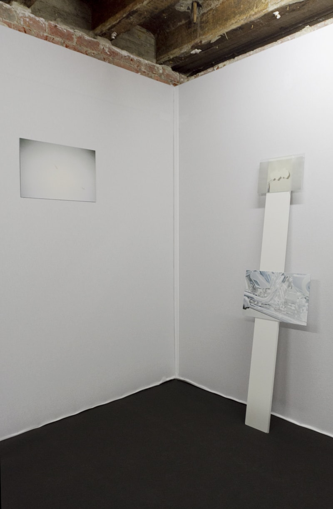

White Trash, Generosity, lancement de la revue Point Contemporain, XPO, Paris, 2016


En surface, la peau, Autofictions, Under Construction Gallery, Paris, 2016


On the soft edge, Hors les Murs, La Nuit de l’Instant, Les Ateliers de l'Image, Marseille, 2016


White Trash, sur invitation de Point Contemporain, Le Louise, Young International Artfair, Bruxelles, 2016



White Trash, 43 pages, édition limitée à 10 exemplaires, autopubliée, 2016


Fragments amoureux, Espace Michelet, Les Rencontres Internationales de la Jeune Photographie, Villa Pérochon, 2016


Des filles la mer et une grotte, Espace Michelet, Les Rencontres Internationales de la Jeune Photographie, Villa Pérochon, 2016


Des filles la mer et une grotte, Straat Galerie, La Photographie Marseille, 2015


Des filles la mer et une grotte, 74 pages, édition limitée à 15 exemplaires, autopubliée, 2015


On the soft edge, festival ManifestO, Toulouse, 2015


Le spectre des illuminés, collaboration avec Ken Sortais, Field Effects, Le CAP, Arles, 2015


Lunes noires, collectif Insolance / Melissa Boucher, Marine de la loge, Rebekka Deubner, Le Huit, Paris, 2015


J’ai bu le vin nouveau, Ville fantôme (Photo 122), La Galerie de la Rotonde, Paris, 2015


Cattuliacus, collaboration avec Ken Sortais, Seine Saint Denis Style, Atelier G8 - CIté des Arts, Paris, 2015


Nackt, 48 pages, édition limitée à 30 exemplaires, publiée par LeftHand, 2014


Rupture Interne, édition limitée à 1 exemplaire, autopubliée, 2014